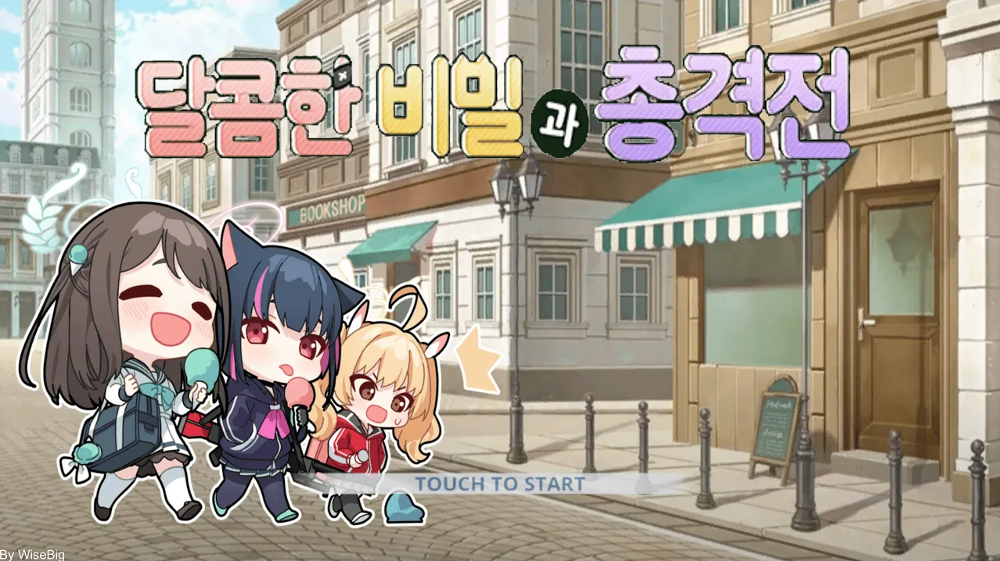
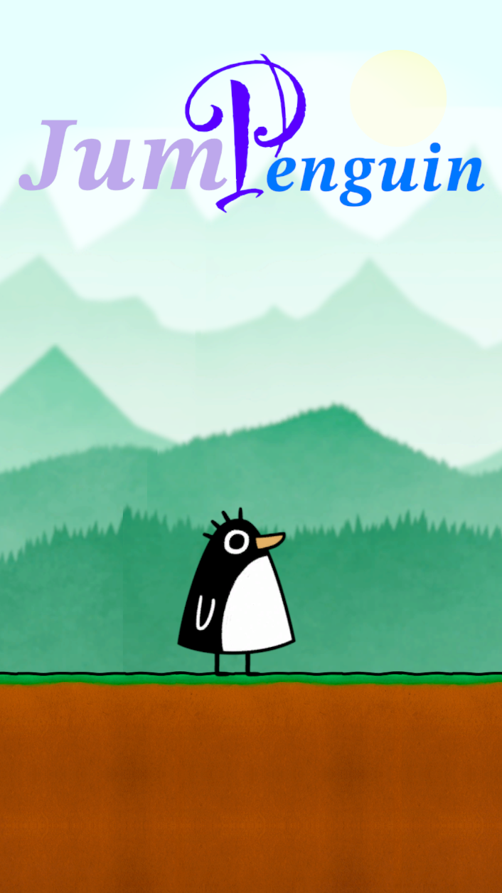

01GAME DEVELOPER PORTFOLIO
I CREATE
MY OWN GAMES.
Unity로 직접 개발한 게임과 프로젝트를 소개합니다. 플레이 영상과 다운로드를 통해 제 작업물을 확인해 보세요.
프로젝트 살펴보기 ↘MY WORK
Featured Projects.
직접 기획하고 개발한 게임 프로젝트
PORTRAIT FORMAT
Portrait Projects.
세로형 화면으로 제작한 게임 프로젝트

04
05
DEVELOPMENT TOOLS
Tools & Automation.
개발 과정에서 직접 제작한 도구와 기술 프로젝트

ABOUT ME
게임을 만들고,
문제를 해결합니다.
게임을 직접 개발하며 기획부터 구현, 테스트와 수정까지 경험을 쌓고 있습니다. 각 프로젝트의 제작 과정과 기술적인 도전도 이곳에 기록할 예정입니다.
Unity
C#
Git
UI Development
Debugging
CONTACT ME ↗